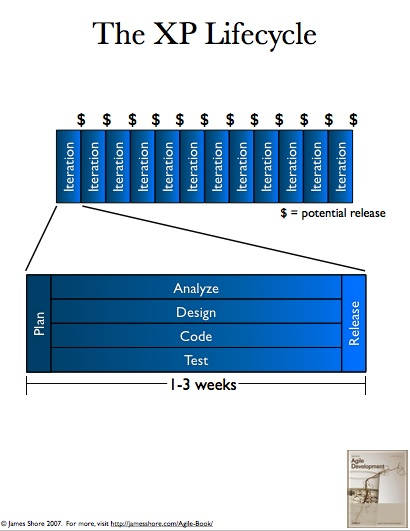
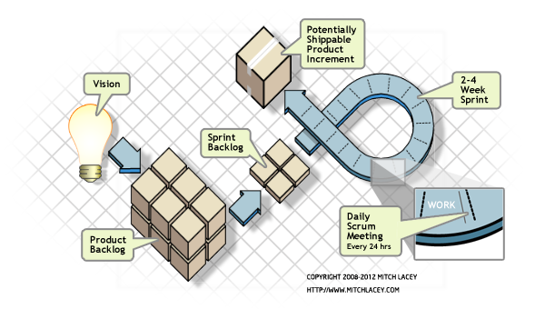
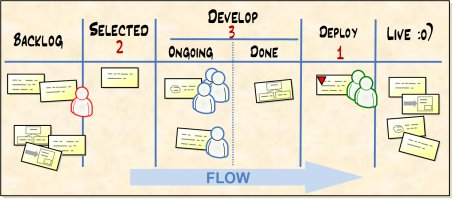

practicas agiles
en desarrollo
de software
Introducción
Temas
- Qué significa ser ágil?
- Metodologías ágiles
- Caso de estudio:
Qué significa ser ágil?
-
El desarrollo ágil no es un proceso especifico que uno puede seguir.
Ningún equipo práctica "el método ágil." Eso no existe.
-
El desarrollo ágil es una filosofía de cómo se concibe el desarrollo de software.
La especificación:
El Manifiesto Ágil
Prácticas ágiles
Algunos ejemplos
- Uso de un sistema de versionamiento
- Revisiones de código
- Demostraciones semanales
- Programación orientada a pruebas
- Integracion continua
- Programació en parejas
Impacto organizacional
- Entrega de productos de valor para el negocio
- Características relevantes se entregan de forma temprana
- Nuevas versiones se entregan frecuentemente
- Equipos listos para recibir e implementar cambios
Impacto técnico
- Productos enfocados a la calidad
(énfasis en pruebas, revisiones, programación en parejas y
refactoring)
- Programadores integran su código constantemente (liberación de software constante)
Impacto Personal
- Mayores niveles de involucramiento y satisfacció de los participantes del proyecto de software (stakeholders)
Metodologías ágiles
- Extreme Programming -XP- (La más rigurosa)
- Scrum (medianamente rigurosa)
- Kanban (poco rigurosa)
Extreme Programming (XP)
- Metodología ligera para equipos de pequeña a mediana escala los cuales desarrollan software con una cantidad muy reducida o altamente cambiante de requerimientos.
- Se enfoca en la aplicación exhaustiva(extrema) de técnicas de programación, comunicación y trabajo en equipo.
Extreme Programming (XP): Características
- Aborda únicamente limitaciones sobre desarrollo de software
- Se adapta cuando los requerimientos son pocos o bien, cambiantes
- Y.A.G.N.I.
- Fomenta la aplicación de prácticas que han probado ser útiles en la mejora
del desarrollo de software.
Extreme Programming (XP): Características
- Ciclos cortos de desarrollo
- Dependencia en ejecución de pruebas
- Comunicación y colaboración constante para evidenciar la intención del sistema
- Diseño evolutivo
Extreme Programming (XP): Principales prácticas
- Equipo unido (Desarrollo, QA, negocio)
- Programación en parejas
- Planeamiento a partir de "historias"
- Ciclo de desarrollo semanal
- Construcción automática del sistema
- Integración continua
- Programación orientada a pruebas
Ciclo de vida de XP

Scrum
- Scrum es una marco de trabajo ágil para la elaboración de proyectos complejos. Fue originariamente concebido para proyectos de desarrollo de software, pero se adapta muy bien para cualquier otro ambiente complejo e innovador de trabajo.
Scrum: Roles
- Product owner: responsable de negocio del proyecto
- ScrumMaster: se asegura que el equipo es funcional y productivo
- Equipo: auto-organizado para realizar el trabajo
Scrum: Ceremonias
- Planemiento de Sprint
- Reunión Scrum diaria
- Revisiones de Sprint
- Reuniones de retrospectiva

Kanban (Carta visual)
- Kanban es un método de manufactura esbelta (lean manufacturing) que ha permitido a compañías como Toyota alcanzar un gran crecimiento.
- Principios:
- Visualice su trabajo
- Limite su trabajo en progreso
Un Kanban básico
- Divide el trabajo en piezas, escribe cada item en una carta y se coloca en la pared/pizarra
- Usa columnas para ilustrar en dónde se encuentra cada elemento
- Limita la cantidad de elementos que pueden estar en progreso en cada estado
Un Kanban básico (continuación)
- Mide el tiempo promedio para completar cada item y lo optimiza para hacerlo más corto y predecible

caso de estudio:
actividades
en XP